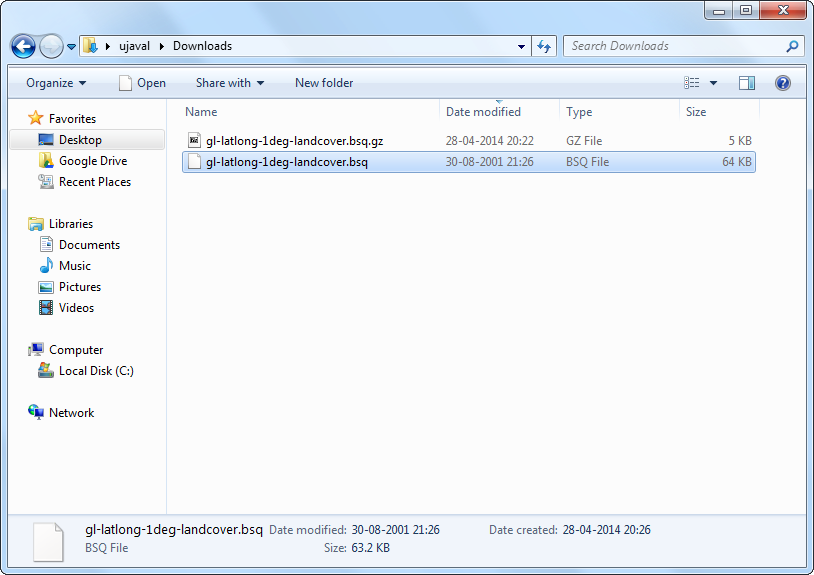

Aprire file in formato BIL, BIP o BSQ in QGIS.
[ Download PDF A4 Letter ]
Nel trattare dati provenienti da sensori remoti e dataset scientifici capita spesso di imbattersi in formati come BIL, BIP o BSQ. la libreria GDAL - che è utilizzata da QGIS per leggere i file raster, supporta questi formati ma non può aprirli da sola. Esamineremo il processo che conduce alla creazione di file di supporto che permettono a QGIS di leggere questi file.
Bande interalacciate a mezzo di linee (BIL), bande interallaciate con i pixel (BIP) e bande sequenziali (BSQ) sono comuni metodi di organizzare i dati immagine per immagini multibanda. (Per saperne di più su questi formati)
Solitamente, questi file sono accompagnati da un file con estensione .hdr . Se il vostro set di dati comprende un file .hdr assicuratevi che il nome radice dei file con estensione .bil, .bsq, e .hdf file sia il medesimo e che si trovino tutti nella stessa directory. Per esempio, se il file si chiama image.bil`, il file associato dovrà chiamarsi ``image.hdr e dovrà essere presente nella stessa directory del file image.bil. A questo punto, quando andrete su , il file image.bil una volta selezionato, verrà aperto senza alcun problema.
Molte volte i file non arrivano con un file .hdr associato. In questi casi, dovremo creare questo file manualmente come viene mostrato nel seguito della nostra esercitazione.
Procedimento
Fate unzip ed estraete dal file archivio il file .bsq. Su Windows, potete usare l’ottimo 7-Zip utility <http://www.7-zip.org/>`_per leggere ed estrarre file di tipo .gz. Come vedrete disponete soltanto di un file .bsq chiamato ``gl-latlong-1deg-landcover.bsq`. .Quindi non c’è alcun file in formato hdr.

Rendetevi conto del fatto che se tentate di aprire il file gl-latlong-1deg-landcover.bsq in QGIS così com’è, riceverete un messaggio di errore.

Per superare questo problema, creeremo un file con estensione .hdr , cioè un file header. Un file header - in italiano file intestazione - contiene informazioni circa il dataset e la sua organizzazione. Di solito, queste informazioni sono fornite come componenti dei metadati del dataset. Se non disponete di metadati, date un’occhiata al sito web o alla documentazione per trovare delle indicazioni. Tra l’altro alcune informazioni possono essere inferite anche quando non se ne possiede una conoscenza diretta. Nel caso di questo dataset la pagina dove si scaricano i dati fornisce un link di collegamento ai metadati. Scaricate i metadati e apriteli.

Il file .hdr che creeremo dovrà essere un file di testo organizzato nel modo presentato di seguito. Alcuni di questi parametri ci vengono forniti in modo esplicito dai metadati mentre altri hanno bisogno di essere inferiti in base al nostro ragionamento. Click su questo link se volete imparare qualcosa riguardo i vari formati.
ncols <number of columns or width of the raster>
nrows <number of rows or height of the raster>
cellsize <pixel size or resolution>
xllcorner <X coordinate of lower-left corner of the raster>
yllcorner <Y coordinate of the lower-left corner of the raster>
nodata_value <pixel value to be ignored>
nbits <number of bits per pixel>
pixeltype <type of values stored in a pixel, typically float or integer>
byteorder <byte order in which image pixel values are stored, msb or lsb>
Adesso aprite un editor di testo e create un file nel formato precisato nel passo precedente. Salvate il file con il nome di gl-latlong-1deg-landcover.hdr. Assicuratevi che il nome del file non abbia l’estensione .txt in coda. Alcuni dei valori del file di testo sono di facile comprensione.
The ncols and nrows si ricavano facilmente dai metadati e corrispondono al Numero delle Linee e al Numero dei Pixel per Linea. Il cellsize è 1 e corrisponde alla risoluzione del pixel nei metadati. Le coordinate X e Y dell’angolo in basso a sinistra saremo invece noi a ricavarle.
Considerando che il file copre l’intero pianeta e che l’unità di misura è in latitudine/longitudine, ne segue che xllcorner e yllcorner saranno, rispettivamente, -180 e -90. Non abbiamo alcuna informazione riguardo il nodata_value quindi -9999 è un valore sicuro. Ancora dai metadati ricaviamo che il Pixel Format è Byte così nbits sarà uguale a 8 e il pixeltyte sarà byte_unsigned. Non abbiamo informazioni sul byteorder e quindi lasciamo pure msbfirst.

Adesso che avete il file header, mettetelo nella stessa directory in cui si trova gl-latlong-1deg-landcover.bsq`. Portatevi quindi in in QGIS, andate su , e selezionate gl-latlong-1deg-landcover.bsq come vostra scelta e fate click su Apri.

Nella prossima schermata vi verrà chiesto di scegliere un SR. Dal momento che i dati sono in Lat/Long scegliete WGS84 EPSG:4326 come SR. A questo punto vedrete il dataset finalmente caricato regolarmente in QGIS.